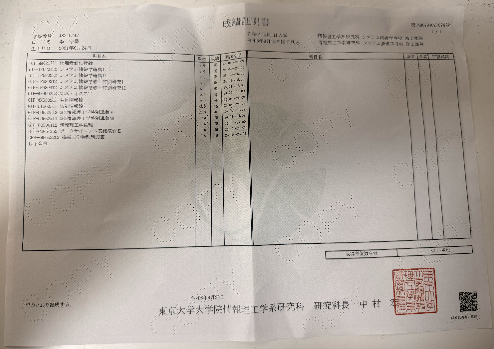
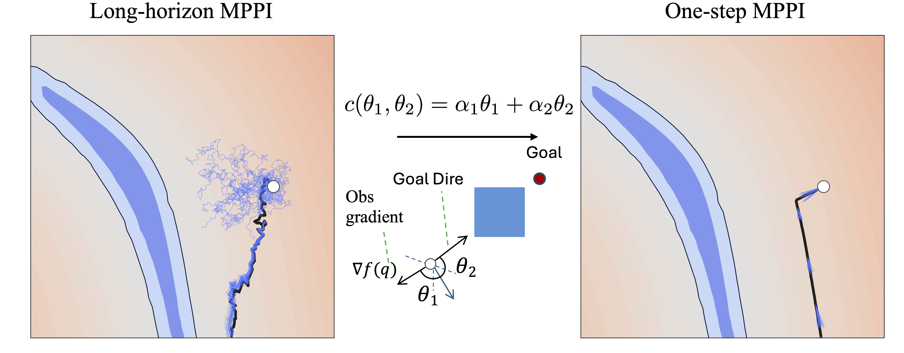

Yulin Li
I received dual B.Eng. degrees from Shandong University and Kumamoto University, where I spent my third year as an exchange student at Kumamoto before earning degrees from both institutions. I am currently a master's student at the Graduate School of Information Science and Technology, The University of Tokyo. My research focuses on robot motion planning and model-based control, bridging configuration-space geometry with efficient real-time planning. After graduation, I will join an autonomous driving company as a software engineer.
Research Interests
News
- 2026.01 Paper on One-Step CDF-MPPI accepted at ICRA 2026.
- 2024.10 Paper on MOF-303 atmospheric water harvesting published in ACS Applied Nano Materials.
- 2024.09 Preprint on S-RRT*-based motion planner for continuum-rigid manipulator released on arXiv.
Publications


Nanoporous MOF-303 Performance for Atmospheric Water Harvesting in the Presence of Airborne Contaminants: GCMC and DFT Simulations
Projects
CDF-MPPI
Fast one-step MPPI motion planner for robotic manipulators using Configuration Space Distance Fields. Accepted at ICRA 2026.
Diffusion Motion Planning
Diffusion and flow matching models for 2D path planning, exploring generative approaches to motion synthesis.
Swama Contributor
High-performance ML runtime in pure Swift on Apple's MLX framework. 500+ GitHub stars. Contributed CLI tooling and cross-origin support.
PointFlowMatch
Flow matching-based motion planning for robotic systems operating in point cloud environments.
Contact
Feel free to reach out via email at lyl20010824@gmail.com, connect on GitHub, or find me on LinkedIn.